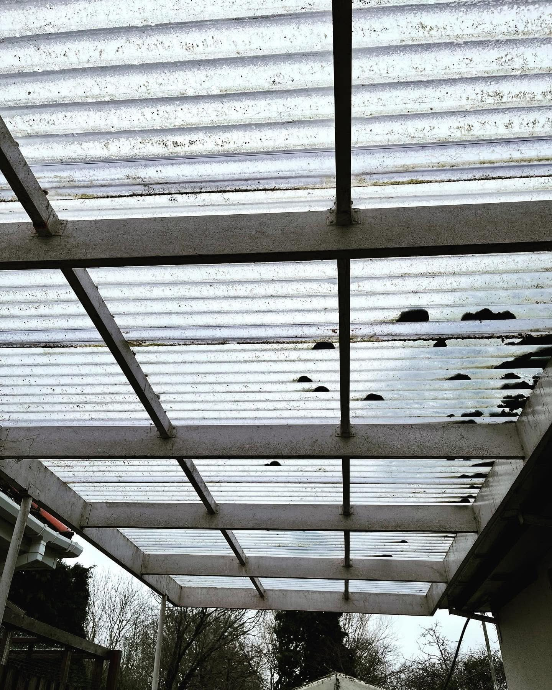
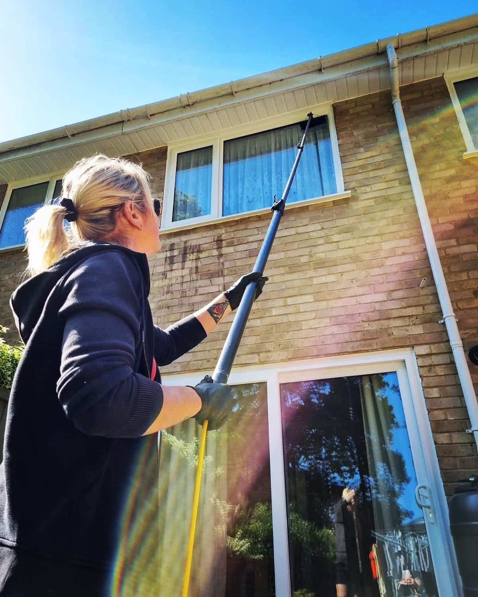
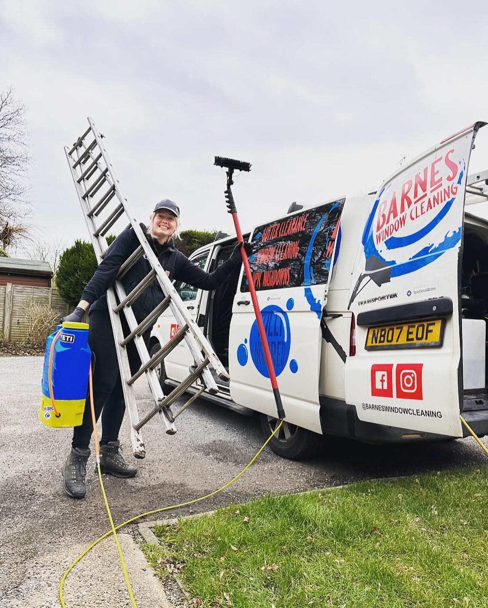
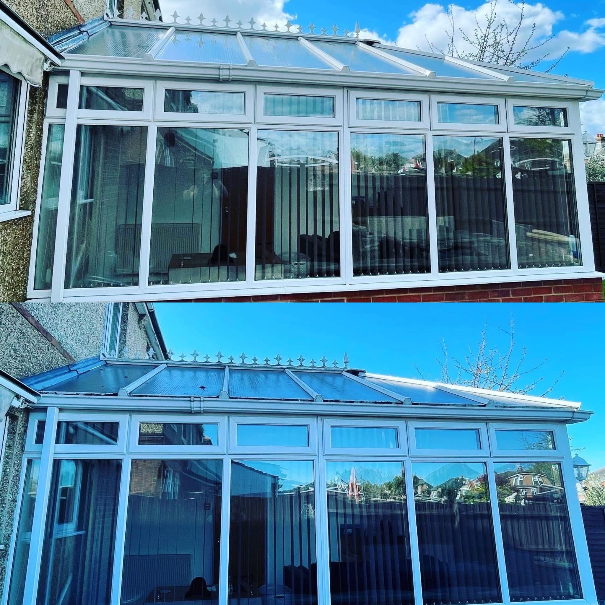
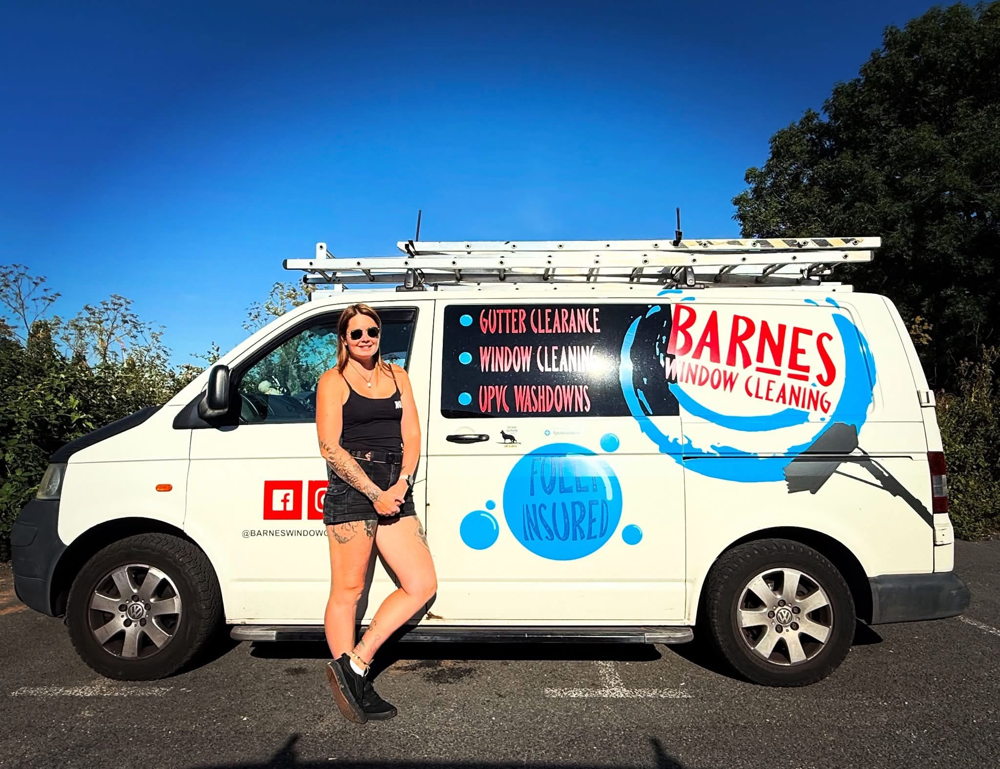

TOTTON · SOUTHAMPTON · UPVC CLEANING FOR EXTERIOR DETAILS.
uPVC washdowns in Totton & Southampton.
Barnes Window Cleaning Ltd offers uPVC washdowns in Totton and Southampton. Enquire with your postcode and the areas you want to discuss.
uPVC Cleaning in Totton & Southampton
uPVC cleaning for exterior details.
Barnes Window Cleaning Ltd lists uPVC washdowns as part of its exterior cleaning services. Get in touch with your postcode and the uPVC areas you would like to discuss.
Request a quote →Explore soft washing →
Window cleaning & Gutter clearance
Give exterior details a clean finish.
Tell Barnes which uPVC areas you have in mind and include the postcode. Photos help explain the job and can be attached in WhatsApp.
Discuss your project →
RECENT WORK
uPVC cleaning for exterior details.
Recent project photographs from Barnes Window Cleaning Ltd.


Totton & Southampton
Ask about a uPVC washdown.
Barnes Window Cleaning Ltd serves Totton and Southampton. Contact the business to discuss a uPVC washdown for your property and confirm service availability for your postcode.
COMMON QUESTIONS
Before you get in touch.
Do you offer uPVC washdowns?
Yes. uPVC washdowns are listed among the business services.
Where is the service available?
The confirmed service area is Totton and Southampton. Share your postcode for a location check.
Can I send photographs?
Yes. Add photos to the WhatsApp message after it opens; include the areas you want to discuss.
How do I get in touch?
Call 07412 556420 or use the enquiry form to send your name, service, postcode and details.
REQUEST A QUOTE
Tell us what you have in mind.
Send the details of your project and its location. WhatsApp opens with your enquiry ready to send, where you can also attach photos.
Barnes Window Cleaning Ltd
Ready to discuss your project?
Totton & Southampton